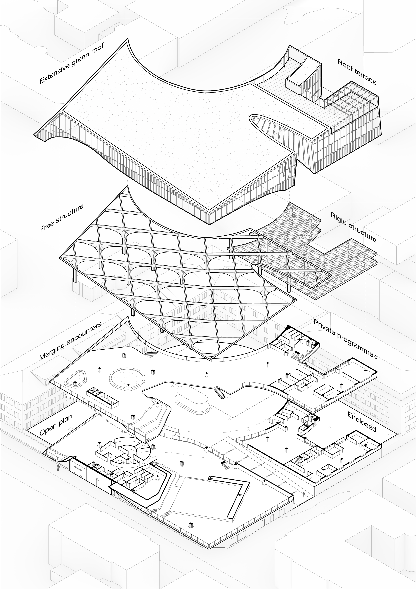
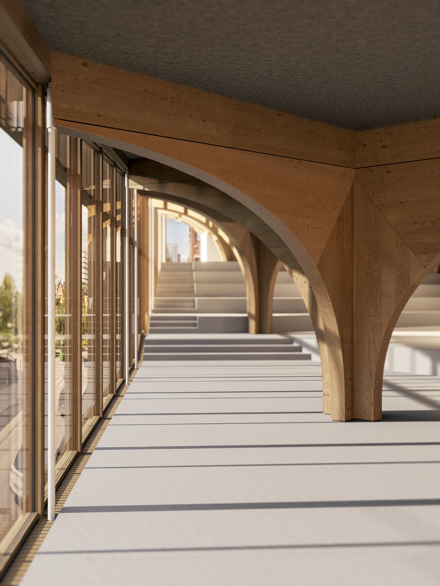

The architecture responds to the programmes
An exploded axonometric reveals how the nature of each wing gets a structure to support its degree of openness.


Hideout tackles youth social health by integrating existing support measures with a modern after-school space. Its central location and multi-user programme aims to remove common barriers to get help. The space is designed around a sequence of publicness, making it easy to go to a public activity the first time while seeing something with a higher barrier to return to.


An exploded axonometric reveals how the nature of each wing gets a structure to support its degree of openness.

From the outside, each venue has its own entrance. On the inside is where users start to merge and interact.

The path leads from public to more private. Walk it to find something new that might interest you, or take a shortcut if you know the place.

The south wing houses the open landscape and the north wing houses the more private functions.

The arched pillars break up the large space into pockets.

 Next project
Campustratten
Explore
Next project
Campustratten
Explore